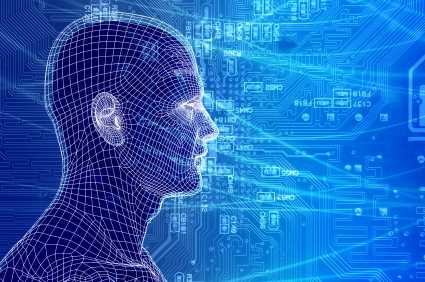

Makine öğrenmesi ve veri madenciliği sık sık aynı yöntemleri kullanırlar ve bu yöntemler önemli ölçüde örtüşmektedir. Bu yöntemler genel hatlarıyla aşağıdaki şekildeki gibi ayırt edilebilir:
Makine öğrenmesi bilinen özelliklere dayanarak öğrenilen verilerden yapılan tahminler üzerine odaklanır.
Veri madenciliği ise verilerdeki (geçmiş) bilinmeyen özelliklerin keşfedilmesine odaklanır. Bu veritabanlarında bilgi keşfi analizinin bir adımıdır.
Bu iki alan birçok yönden örtüşmektedir. Veri madenciliği birçok makine öğrenmesi metodunu kullanır fakat çoğunlukla mantıksal olarak farklı hedefleri vardır. Diğer bir yandan makine öğrenmesi de denetimsiz öğrenme ya da öğrenici doğruluğunu geliştirmek için ön işleme adımı gibi veri madenciliği metotlarını kullanır.
Günümüzde üretim sektöründe işlev gösteren en iyi üreticiler en başarılı malzemeyi sunan firmalarla alışveriş içerisinde oluyorlar. En yeni ve en iyi teknolojilerle üretim yapan bu üreticiler artık ürünlerinin imal aşamasında her zamankinden daha fazla sensör kullanarak teknolojiyi olabildiğince yaygın şekilde kullanıyorlar. Aynı zamanda üretimin internet ağları üzerinden gerçekleştirilebilmesi de teknolojinin ne denli yoğun bir biçimde kullanıldığının en önemli kanıtlarından biri. Bu teknolojiler artık üretimde yeni bir dönüşüm oluşturmakta ve yüksek teknolojiyle gelen üretim zihniyeti artık üretim şirketlerinin başarıyı yakalayabilmeleri için gerekli olan yeni bir vizyon.
Bu aşamada gerçekleşen ilk değişim ürünlerden hizmetlere doğru olmakta. Yapılan bir tahmine göre kablosuz bağlantılı ürünlerin sayısı (Akıllı telefonlar ve bilgisayarlar hariç) 2020 yılına kadar 5 milyardan 21 milyara kadar artış gösterecek. Teknoloji bu derecede yaygınlaşıyorken sistemlerin işleyişi de yavaş yavaş insanlar tarafından kontrol edilmesi güç bir duruma geliyor. Veri elde edip elde edilen verilerin değerlendirilip sonuçların ortaya konması insan eliyle gerçekleştiğinde çok uzunca bir zaman alıyor. Bu durumun gelecekte daha yaygın bir alandan ortaya çıkacağı düşünüldüğünde büyük sıkıntılar ortaya çıkabilecek gibi görünüyor. Makine öğrenmesiyle geliştirilen sistemler detaylı veri analizleri ve istatistiksel analizler gibi birçok bilgiyi bir araya getirerek bu bilgileri belirli yöntemlerle problemlerin çözümünde kullanacak. Artık makinelerin kullanıldığı sistemler yeni problemlerle karşılaşıldığında analiz ettikleri verilerin ışığında çözümü kendiliğinden ortaya koyabilecekler.